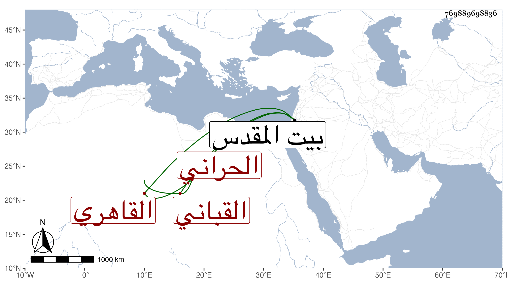

0902Sakhawi.DawLamic.ITO20230111-ara1.EIS1600.769889698836
Biography ID: 769889698836
720
عبد القادر بن عبد العزيز بن محمد محيي الدين بن الشيخ عز الدين بن البدر الحراني الأصل القاهري القباني أخو الجلال محمد الآتي والماضي أبوهما ولد سنة تسع وثمانمائة وحفظ القرآن والعمدة والمنهاج وعرض على الشمس بن الديري والتفهني وقارىء الهداية والبساطي والمحب بن نصر الله وشيخنا وسمع عليه بل وعلى الولوي العراقي وأقام عنده حين غيبة والده في بعض حجاته والزين الزركشي وآخرين وأجاز له جماعة وتولع بالقبان فكان يزن بدار الضرب وبالمخبز في سعيد السعداء ثم اقتصر عليه ، وحج غير مرة وجاور وزار بيت المقدس .
